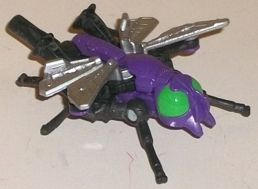
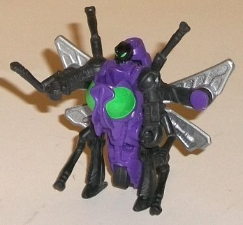
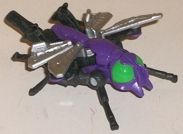
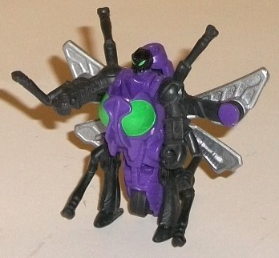
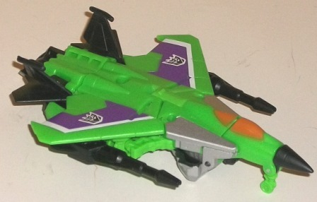
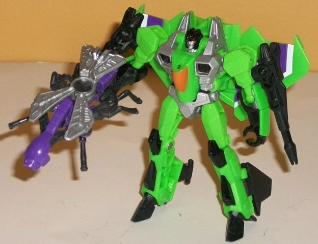

 
Difficulty of Transformations : Very Easy
Color Scheme : Black, purple, silver, and some moderately light forest green
Individual Rating : 4.8
Allegiances
: Decepticon
Size
: Legends 2-pack
(NOTE: Because this set is composed of repaints,
this is not a full-blown review. This mainly covers any changes made to
the set and the color scheme, and merely compares it to the original versions
of these molds. For a review on Generations Legends Starcream w/ Waspinator--
the original versions of these molds-- go
here
.)
 Venin
Venin


Difficulty of Transformations
: Very
Easy
Color Scheme
: Black, purple, silver,
and some moderately light forest green
Individual Rating
: 4.8
Venin is a bit of an
enigma as far as repaints go. As you may have been able to tell from the
name, he was originally going to be homaging the Insecticon G1 Venom--
but instead Hasbro changed his colors when it was determined his pack-in
buddy was going to be Acid Storm. The colors themselves aren't very obviously
homaging anything, though a common guess is that it's an homage to the
G1 Pretender Bugly (though again, this is just a guess). Regardless, Venin's
color scheme of purple and black is very Decepticon-y, and these two colors
pretty much always go well with each other; Venin is no exception. The
silver wings also serve as a nice lighter contrast color, and the green
eyes in both modes help to add just that extra touch of paint to give him
a nifty accent color that goes great with both the purple and black (and
helps to tie his color scheme in a bit more with Acid Storm's, to boot).
I do wish he had another paint app or two for the larger areas of his purple
and/or black plastic to break things up a little more, but by and large
his colors are pretty ace, albeit not particularly fitting for a bee/wasp.
No mold changes have
been made to Venin.
 Acid
Storm
Acid
Storm


Difficulty of Transformation
: Easy
Color Scheme
: Light lime green,
black, and some silver, white, dull yellowish orange, red, and purple
Individual Rating
: 7.7
Acid Storm follows his general "usual" color scheme rule of being primarily green and black, but the shades of those particular colors-- and their accents-- are a bit different on this Legends version. The light green is rather lime-like in its shading, but not BRIGHT like, say on his Masterpiece toy . I rather like this shade, and hope it's used more often on inevitable future Acid Storm toys. There's also a fair amount of black on the toy in its usual places-- the nosecone, the tailwings, the guns, the robot head-- but there's also a bit of silver on this Acid Storm that isn't on most other versions of the character, with the silver taking up the same space here that it usually does on Thundercracker and Skywarp-- i.e., mainly the intakes on the sides of the cockpit and the robot chest and waist. I like upping the color variety here, so I have no issues with the silver. The paint used for the cockpit is an orangeish shade, compared to the usual yellow that is used there on Seeker redecoes-- here I feel it's a negative change, as yellow would contrast quite well with the green and would help him fit in with his fellow Seekers better. Definitely the most interesting change from Acid Storm's usual deco job, however, are the purple-and-white stripes on his wings. Not only are they in the same style as on most other Seekers to help him blend in on a shelf a bit better, but they also pop VERY well against the green, to the point where I wish they were used a bit more on the toy, perhaps a bit on his robot mode appendages. This is another departure from the norm on this redeco that I hope is used on future Acid Storm toys.
The Acid Storm & Venin set both have great paint deco jobs. The addition of purple and silver to Acid Storm's normal overall already-good color scheme does wonders, and Venin's black-and-purple color scheme looks awesome on almost any toy. That said, neither are particularly impressive molds, and thus I'd only recommend this set to Seeker completists.
Reviews by Beastbot